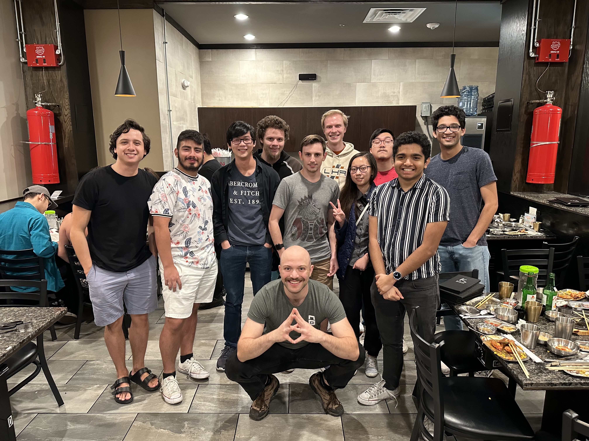

i remember john green called it the act of jumping through arbitrary hoops.That continues to speak to me all the time whenever i find myself in class. often the cool shit that i want to make feels like it's at odds with what teachers feel is best for learning or whatever. and i get that. i trust my teachers to know what's best. but also, sometimes it can feel restricting. if i suddenly decide that i find website development really interesting halfway through the semester, but i'm in a circuits class, naturally i can't just jump to web development and leave circuits behind. i suppose i'm just bad at discipline, but maybe learning should be a messy act that we find ourselves just jumping around random topics with. and thinking back, i wonder if this is why i never felt so lost in high-school, as i was forced to kind of study every topic with the same level of intensity.
i can very clearly see and understand that there is this big love and desire to create within me. maybe i was just feeling burnt out. i guess a better question is what makes me HATE engineering? And that answer is simple. When i feel like i dont have enough time to explore the shit im genuinely interested in on the side. this is a basic tenet of burnout i feel. watching for it and being conscious of it and understanding that im not just a work machine would probably be really beneficial for me in the long run. the feeling is nice though. the madness of engineering. you feel this big swell of happiness permeate within you, which is a kind of beautiful thing. the most exhilirating part is how... independent it is, if that makes sense. like the great thing about independent projects is that no one told me to do this. i followed my personal interest in doing something, and since i'm usually so averse to doing ANYTHING (even the things i really, really want), this feels like a step in the right direction.
let me just say one thing before i start: ottavio is my fucking dawg. i love this guy. i have never met a man with so much love for life in such a uniquely interesting, passionate, playful way. i first met ottavio in my spring 2022 semester in my computer architecture class (this class of which probably deserves its own entire reflection. maybe i'll write it. if i do, i'm gonna link it here). i remember seeing him on the zoom (covid) classroom, and thinking he just looked like a really interesting guy to talk to. his profile picture was of him: bald, cowboy hat, with this really fantastic gay uncle energy. he was older than me by 4 years, and i've always found that i can talk to older people easier than people my age, because people older than me love just being asked questions by people younger than them. i have this way of asking questions that doesn't feel annoying and also makes people feel special, and i figure this is what must have convinced ottavio to hang out with me to work on the first homework of that class. ottavio is open in the way that i really like people to be open. there's no shame behind him. he has the type of confidence to where if he started walking around naked, he would make you feel like the weird one for not also walking around naked, which i think is a really unique gift. when you're THAT open, you kind of also have to love everyone. i figure this must have something to being in a near-death experience like cancer, but it's a really fantastic energy that i try my best to emulate.
ok but what does this have to do with the madness of engineering? well, the semester after computer architecture, we took an embedded systems class together, arguably the hardest class of my college career. there would be a new lab every single week, all of which took at least 20 hours to fully understand and execute. this greuling work schedule brought up big conversations about burn out, what it means to be an engineer, the kind of engineering we were passionate about, what we wanted to do with our lives, what the meaning of life was, and all the beautiful stuff in between that. something that i personally struggled with is: what is the pursuit of pursuing knowledge? like why does this matter? like john green said, it feels like jumping through a bunch of arbitrary hoops. why am i doing this!?!?!?! i brought this concern up to the group, and ottavio chimed in with something he'd been thinking/journaling about for a long time. something that he called monk mode.
the thesis of monk mode is that gaining knowledge in ANYTHING brings you closer to the universe in a pyscho-spiritual manner. let me explain in the way i understood it: imagine a grandpa and a grandchild who don't understand each other. perhaps the generational gap is too big, or maybe they just don't interact enough. the child doesn't understand why he has to love someone he doesn't know just because they happen to share some of the same blood. so maybe they're sitting amongst each other in silence and the grandpa, to break the silence, decides to bring out an old picture album from his youth. in one of the pictures, the young version of the grandpa can be seen riding a motorcycle, which catches the grandchild's attention. woah, grandpa used to be cool? even better, the grandchild has always been interested in motorcycles but never knew how to get into them. now he has a living person to ask! and suddenly, the two realize that they AREN'T that different from each other, and actually have a lot in common. learning things about someone brings us closer to them, in the same way that learning things about the universe brings us closer to the universe. trying to learn about the secrets of the universe and what makes it tick integrates us into the world in a very real way. every field influences every other field. proficiency in one thing expands to all other parts of the universe. treating the universe as a person to understand is a valid approach to life, i think.
eventually maybe i can get a write-up from ottavio to explain it in his own words. he'd do a much better job than me, i'm sure.
the embedded lab group. ottavio up front.